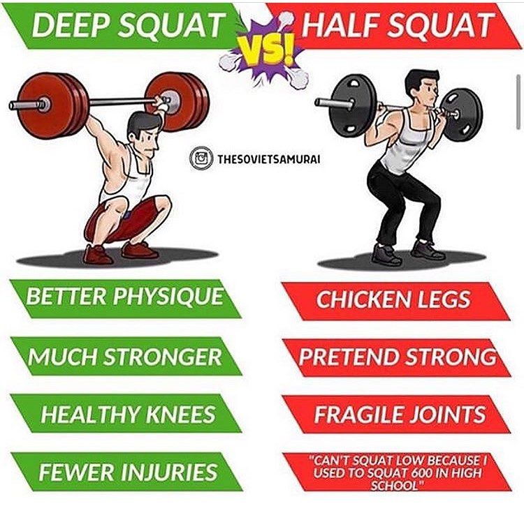
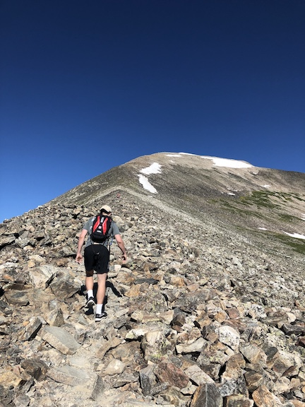

Examining the benefits and detriments of training (exercising and recovering for a goal) alone vs. with a partner or team. Each modality offers benefits the other can't, and should be balanced with each other for maximum effect. Recommended sessions are also provided for the trainee who is interested in experiencing the full benefits of each.
I've never had a true training partner at any point in my life, mostly due to the eccentricity of my training. In high school, no one else really lifted and I mostly did bodyweight work. In college, I continued bodyweight work at the gymnastics facility (where I was considered an outsider) and added more weights, but only did legs once a week with a friend as a social activity. After college, fuggedaboutit—having to get to the gym at 4:30am is undesirable for anyone, especially people my age.
It's also important to note that my progress over the years has been quite poor for a few reasons, but namely consistency. I chose to jump around on programs due to my interests changing, at the expense of getting truly strong, and alternated between weeks of hard training and weeks completely off. Do I regret this? Yes and no, but that's for another post. I often wonder how different my progress would be if I had a training partner with similar interests and mindsets along the way. Would I have learned everything I have from training alone? Would they have told me to stop fucking around? Would they have even noticed? Would I have even listened to them?
While I am fiercely independent and believe most, if not all, motivation and discipline and spurring should be sourced individually and without any external help, it would be naïve to say that training with others does not provide benefits—benefits that aren't offered in solitude.
Ultimately, we are all alone. People can be unreliable and disloyal, have higher priorities, change interests. Many friends and family you know will die while you continue living. Relying on yourself is an underrated, under-thought-of skill nowadays. There's nothing wrong with leaning on others for support, but it should only be opted for once the first line of defense has failed: yourself.
Assuming a decent strength and conditioning program is being followed, pain (read: discomfort) in training is inevitable. It will manifest itself in physical form as you continue pedaling, continue rowing, continue squatting, continue moving, despite your body's protestations to immediately stop for its own immediate safety and longevity. It will manifest itself in mental form as you realize you aren't even halfway and the aforementioned objections of continuing forward are already in full force, having been for some time.
Learning to deal with these pain variants independently is important and valuable. Anyone can do so with a cheering crowd next to you or the pressure that someone is relying on you. (Of course, there are situations like these in which some people can't do it.) Not everyone can do it when the conditions are uncomfortable and there's no external pressure riding on completion.
Some people's true nature can only be discovered a few ways. Putting a significant amount of pressure on them is one. They may rise to the occasion or succumb to their fragility, both of which are informative. Putting zero pressure on them is another, and my preferred method, as the former can lead to false positives (a weak person rises and a strong one succumbs). They may still rise to an occasion. Which one you ask? Since there's no pressure, the only occasions being created are ones by them, indicating ambition and discipline. A few training-related questions (and my thoughts on each, all of which apply only to those serious about training/fitness) to ask on the path to discovery:
While some of these answers can unveil themselves during team-based training, they most certainly will during solitary training because no one else is there to enforce anything. You can skate by with half squats and rationalize quitting mid-session with a small penalty to yourself (although those transgressions are much more penalizing than they may seem). The other answers can come up when training with others. They may innocuously ask why you train like that or what your goals are, leaving you speechless as you realize your faults.
If you answered no/no/yes/no/yes/yes, respectively, to any of these questions, I encourage you to candidly reevaluate why you train (or exercise, if you answered "no" to question two). The answers should be a wake-up call.
Few individuals can reach or exceed their absolute or perceived performance limit (the latter of which is always less than the former) on their own, requiring some form of external motivation to do so. Teams come into play here in a few ways.
First, speaking anecdotally, having someone yelling at you to push, pull, go, dig deep, catch them, pump your arms, go hard, or similar really can boost immediate performance.
Second, the fear and embarrassment of letting a teammate (or worse, the entire team) can be greater than the physical and mental anguish being felt, forcing the body and mind to continue torturing itself.
Third, the desire to impress an observer—coach, rival, romantic interest (warning: this rarely works), scout—in hopes of some reward—recognition, inducing fear and doubt, enhancing attractiveness, improving recruitment chances, respectively—may override the pain being experienced.
Exceeding the perceived performance limit is incredibly important, making team-based training incredibly important by extension: it shows you are more capable than expected. Once this epiphany is had, understood, and accepted, it remains for all-time. Any challenging effort made after that fateful day is known to be less than or equal to the current perceived performance limit, allowing yourself to know there is still more left in the tank.
An anecdote to drive this point home: In 2018, I completed the Bataan Memorial Death March, a 26.2 mi ruck event, with a 48 lb rucksack on in 9:13:56. I did literally (in the truest sense of the word) zero ruck training in preparation and minimally trained legs. (If you're interested in the truthfulness of this, I'm happy to share old training logs, just contact me.) An excerpt from A Long Drag:
It was the worst physical experience of my life. What started at 6:00am in the cool New Mexican breeze ended 9:13:56 hours later in the warm afternoon sun I had come to loathe over the past 5 hours. What started out at a run passing numerous people as the rice packs jiggled in my sack slowly, but surely, turned into a slogging walk. What started out as a fun and jovial activity for my family turned sour as fatigue spread from the legs to the back to the mind to the soul. The hills were never-ending, the pliable sand unforgiving, and my many-years-old running shoes ill-equipped for the job that hiking shoes and military boots were designed for. There was no one-specific spot that hurt the worst. Blisters were quickly forming on my feet and the 50 lb of pack had been digging into my shoulders since the beginning. I vowed to never again even consider doing it again, going so far as to make a pact with my father and brother to remind me of the pain and suffering I endured if I so much as brought up the idea. I gorged on the fruit and Gatorade at the rest stations, but to no avail: the calories in could not keep up with the ever-growing fatigue overwhelming my body.
What was so important about this experience was the fact that I was ready to quit around hour four, and yet continued on for another five. I hit my perceived limit around hour seven, but with the help of my team—consisting of my father and brother—continued on for another two. From then until I die, I know with absolute certainty that I have the ability to continue past my current perceived limit. This is obvious in saying, but takes an experience like one above to completely understand.
Note that each type of activity has different limit values. The more strength- or anaerobic-based the effort, the closer the perceived limit is to the absolute limit is. My perceived limit on the squat is my one-rep max, and my absolute limit may be a tad higher than that if the stars align, but short of having to save a baby trapped underneath a car, it's not going to go up by much else, even if I'm getting yelled at by the hottest woman ever and my best friend has his entire life savings on the line. The more endurance-based the efforts, the farther the perceived limit is from the absolute limit, and the more you can exceed it. My perceived limit on the march was around seven hours based on how I felt at four, but I was still able to squeeze out a few extra hours of effort.
From nonprophet's I Fucking Hate Lists essay:
Environment. Make yours, don’t let it just happen to you. As they say “shit rolls down hill.” I don’t care how much will power you have or how many Jocko energy drinks you down, you cannot overcome the importance of a growth environment. You need to train with people who have similar values. NO ONE CAN THRIVE IN A VACUUM, and that is coming from me, someone who would cheer on a blackhole swallowing our solar system. If you train alone, invite someone in and try and be the environment that you need for them. It may take a while, but eventually it comes back to serve you. Make your training space idealistic. Aim high, demand that your space is clean, and not just the floors but also that what is said is of something to aim for. This does not mean that everyone has to be a fucking cheerleader, but for sure don’t let it become a soap opera. Too often I see people turn the gym into a bitch fest. Training can be helpful therapy but don’t let your need for therapy sanguine the life force from your training space. People will appreciate your focus on the goal, the one’s that don’t weren’t doing you any good anyways and will usually feel too unwelcome as long as you don’t allow their attitude space. Try this: next time someone goes into bitching mode, reply to them with a completely different topic or question, the people who can change will notice and make a change. Get rid of the others.
Training with others often doubles as a social activity. Training hard with others always doubles as a bonding activity. You are both suffering similar amounts, you both want to quit the same amount, you both are training for similar reasons (else you wouldn't be doing the same session). Pain like this serves as a social glue and strengthens relationships faster than other typical social activities.
Discovery can still be had, just of the other trainee. Do they understand what they're doing? Do they have goals? Do they give up easily? Do they require someone else to spur them to train? Do they prefer certain sessions and exercises over others? Do they have poor standards?
Getting feedback on behaviors, ideas, and actions—training-related and not—is one of the most valuable practices anyone can have. I provide and receive it only a daily basis in my weekly one-on-ones and consider it a major life improvement.
Our judgment can be clouded by impulse and fancy gimmicks. There was a time when I had 20 different goals and wish I had a partner to call me out on my dumbassery. There were other times where I thought training to failure was good and that not training in some form or fashion every day was wasted time. I wish I had a second set of eyes there, too. The list goes on, but the wish stays the same and is summed up by the fact that a partner who is knowledgeable, reasonable, and honest is one of the most valuable training tools there is.
Accountability is provided in a one-on-one relationship, but is likely irrelevant to the dedicated trainee. They rarely need someone to make sure they are waking up early, completing the session, practicing a healthy lifestyle, and so on. For those lacking in a specific area, a team is a good way to stay accountable for behaviors and actions.
The detriments associated with each training type is the negative of the other training type's benefit:
With benefits and detriments listed, some balance must be struck between training alone and with a team, where weights are determined according to each benefit's priority level. If you want to bond more with people, more team-based sessions should be done. If you want to improve pain management techniques, more solitary sessions should be done.
Benefits do not scale linearly with number of sessions, nor should a benefit be expected in every session:
Below are some suggestions for training sessions. They can all be done alone or with a team.
Designed by Mark Twight during his days at Gym Jones:
We use this workout to illustrate the necessity of training to breathe under a load, either being crushed under an opponent. Given enough endurance that these muscles do not become contributors to systemic fatigue the athlete will experience fitness gains outside of normally recognized pathways.
3 rounds of:
Inspired by the hellacious Bataan Memorial Death March, this teaches patience and working together to accomplish a common goal. Getting angry with each other is not a wise choice. The team must stay together the entire time, no exceptions.
The original description, straight from the man himself:
Why is it called “300 FY”? First, FY means fuck you. And it’s named so because there are a bunch of videos on YouTube showing so called “Spartan training” or “a variation on the 300 Spartan workout”. Some were funny (the one using Thera-Bands made me spit coffee on the keyboard). Another made me wonder if its protagonist preferred what he was doing to working out. But most of the videos made me genuinely sad because they show the margin by which most people have missed the point – and I honestly wish they hadn’t. “300 FY” is simple, and there’s no way to cheat it or modify it. Some AirDynes may be more efficient than others but not too different. How do you do the workout? Saddle up, set the countdown timer for ten minutes, come out of the gate hard, and hold on. If you finish with 300 or more you have done the workout. If you finish with 299 calories you have not done it. No scaling, no changes. It cannot be dragged down to a more easily attainable level. Do what is written: just like the original “300” workout, which was composed as a one-time test, and taken without rehearsal or practice.
In simple terms, get on Schwinn Airdyne AD4 and pedal for 10:00 minutes. "If you finish with 300 or more you have done the workout. If you finish with 299 calories you have not done it." This is a pain tolerance session, plain and simple. This is meant to be done alone: no music, no coach or teammate alongside you, no plans to post your workout on Instagram for all your opposite-sex followers to see. Get on the bike, commit to 10:00 minutes, and use your aggressive feelings and let the pain flow through you.
Demand better form. Accept a lower weight if you have to. No one cares about the number on the bar. Except the voice in your own head that only wants to say and hear positive things. Get over it—shut its mouth—or be enslaved by it.
Pick one thing and do it to the exclusion of other things. Develop it. Progress. Rise. By doing so you will reach a height from which you may observe what you have left behind, what you sacrificed in order to achieve. Being good at the one thing clearly exposes the difference between what you can do well and what you can’t. Weaknesses become obvious. The focus of future work is clear. But only IF fixing those deficiencies will take you closer to your goal.